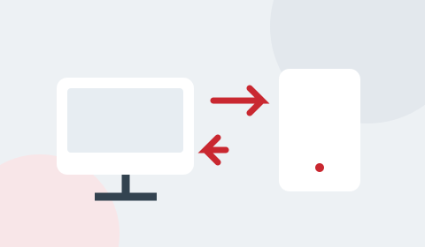

Portátiles
Diagnóstico, pantallas, teclados, baterías, cargadores, limpieza y problemas de sobrecalentamiento.
Nuestros servicios
Asistencia a particulares y empresas, adaptada a cada equipo.
Diagnóstico, pantallas, teclados, baterías, cargadores, limpieza y problemas de sobrecalentamiento.
Reparación, montaje de PC, instalación de SSD y RAM y comprobación de compatibilidad.
Configuración de routers, repetidores y redes por cable, cobertura Wi-Fi e impresoras compartidas.
Instalación y configuración de sistemas, controladores y programas, y optimización del rendimiento.
Eliminación de malware, configuración de protección y copias de seguridad de tus archivos.

Migración de archivos, evaluación de recuperación de datos y asistencia remota previo acuerdo.
Sitios web rápidos para negocios locales, con alojamiento, certificado SSL y mantenimiento incluidos en una cuota mensual. Gestión técnica para que tu sitio funcione correctamente.
Consulta las zonas de desplazamiento y confirma si podemos prestar asistencia informática en tu ubicación.
Del primer contacto a la solución
Rellena el formulario indicando el equipo, los síntomas y tu localidad para que podamos evaluar la solicitud y preparar la asistencia.
Programamos la asistencia a domicilio o, cuando proceda, una sesión remota. Acordamos previamente la cita y las condiciones del servicio.
Tras el diagnóstico, explicamos la intervención propuesta y su coste. Solo empezamos con tu aprobación.
Sí. Me desplazo a domicilios y oficinas de la Gran Lisboa y de la zona de Cascais para resolver problemas de ordenadores, impresoras y Wi-Fi, e instalar o configurar equipos. Fuera de la zona de desplazamiento podemos concertar una sesión remota, si el problema permite atenderlo a distancia.
Sí. Diagnostico y reparo ordenadores de sobremesa y portátiles: lentitud, fallos de arranque, sustitución de discos por SSD, limpieza y ampliaciones de memoria u otros componentes. Evalúo el equipo y presento un presupuesto para su aprobación antes de reparar.
Para urgencias, llama o utiliza el botón de WhatsApp de la página de inicio: procuro responder el mismo día, si la agenda lo permite. Respondo a formularios y correos en un plazo de 24 horas laborables. El plazo de respuesta no equivale necesariamente al de intervención.
Una sesión remota para evaluar la red y los equipos existentes, investigar el origen del problema y presentar recomendaciones concretas. Si hace falta comprar equipos, recibes una lista de modelos recomendados. Puedes utilizarla sin obligación de contratarme para la instalación.
Contacta con nosotros para evaluar tu solicitud y acordar el siguiente paso.